Agreement Tests
Aaron R. Caldwell
Last Updated: 2024-10-23
Source:vignettes/agree_tests.Rmd
agree_tests.RmdThe SimplyAgree R package was created to make the
process of quantifying measurement agreement, consistency, and
reliability. This package expands upon the capabilities of currently
available R packages (such as psych and
blandr) by 1) providing support for agreement studies that
involve multiple observations (agree_test and
agree_reps functions) 2) provide robust tests of agreement
even in simple studies (shieh_test output from the
agree_test function) and 3) a robust set of reliability
statistics (reli_stats function).
In this vignette I will briefly demonstrate the implementation of the
functions that include tests of agreement. Please note, I would
recommend using the agreement_limit function over these
older functions with the exception of agree_np which
provides non-parametric agreement limits.
Simple Agreement
agree_test
In the simplest scenario, a study may be conducted to compare one
measure (e.g., x) and another (e.g., y). In
this scenario each pair of observations (x and y) are
independent; meaning that each pair represents one
subject/participant. In most cases we have a degree of agreement that we
would deem adequate. This may constitute a hypothesis wherein you may
believe the agreement between two measurements is within a certain limit
(limits of agreement). If this is the goal then the
agree_test function is what you need to use in this
package.
The data for the two measurements are put into the x and
y arguments. If there is a hypothesized limit of agreement
then this can be set with the delta argument (this is
optional). Next, the limit of agreement can be set with the
agree.level and the confidence level (\(1-\alpha\)). Once those are set the
analysis can be run. Please note, this package has pre-loaded data from
the Zou 2013 paper. While data does not conform the assumptions of the
test it can be used to test out many of the functions in this package.
Since there isn’t an a priori hypothesis I will not declare a
delta argument, but I will estimate the 95% confidence
intervals for 80% limits of agreement.
a1 = agree_test(x = reps$x,
y = reps$y,
agree.level = .8)
#> Warning: `agree_test()` was deprecated in SimplyAgree 0.2.0.
#> ℹ Please use `agreement_limit()` instead.
#> This warning is displayed once every 8 hours.
#> Call `lifecycle::last_lifecycle_warnings()` to see where this warning was
#> generated.We can then print the general results. These results include the
general parameters of the analysis up top, then the results of the Shieh
exact test for agreement (no conclusion is included due to the lack of a
delta argument being set). Then the limits of agreement,
with confidence limits, are included. Lastly, Lin’s Concordance
Correlation Coefficient, another measure of agreement, is also
included.
print(a1)
#> Limit of Agreement = 80%
#>
#> ###- Shieh Results -###
#> Exact 90% C.I. [-1.512, 2.3887]
#> Hypothesis Test: No Hypothesis Test
#>
#> ###- Bland-Altman Limits of Agreement (LoA) -###
#> Estimate Lower CI Upper CI CI Level
#> Bias 0.4383 -0.1669 1.0436 0.95
#> Lower LoA -1.1214 -1.8037 -0.4391 0.90
#> Upper LoA 1.9980 1.3157 2.6803 0.90
#>
#> ###- Concordance Correlation Coefficient (CCC) -###
#> CCC: 0.4791, 95% C.I. [0.1276, 0.7237]Next, we can use the generic plot function to produce
visualizations of agreement. This includes the Bland-Altman plot
(type = 1) and a line-of-identity plot
(type = 2).
plot(a1, type = 1)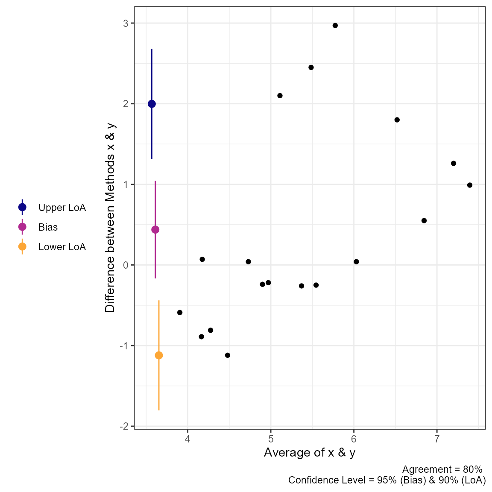
plot(a1, type = 2) 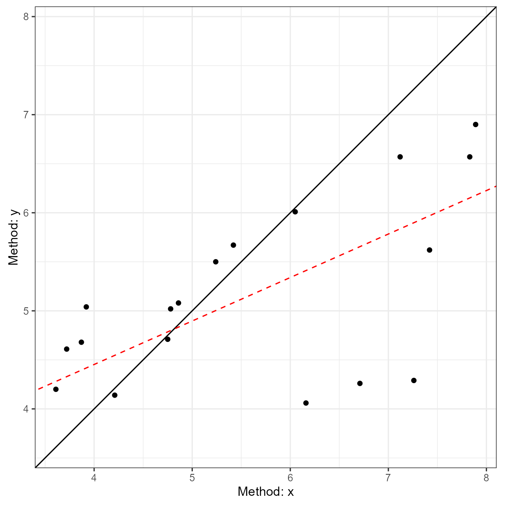
Calculations in for Simple Agreement
Shieh’s test
The hypothesis test procedure is based on the “exact” approach details by Shieh (2019). In this procedure the null hypothesis (not acceptable agreement) is rejected if the extreme lower bound and upper bound are within the proposed agreement limits. The agreement limits (\(\hat\theta_{EL} \space and \space \hat\theta_{EU}\)) are calculated as the following:
\[ \hat\theta_{EL,EU} = \bar{d} \pm \gamma_{1-\alpha}\cdot \frac{S}{\sqrt{N}} \]
wherein \(\bar{d}\) is the mean
difference between the two methods, \(S\) is the standard deviation of the
differences, \(N\) is the total number
of pairs, and \(\gamma_{1-\alpha}\)
critical value (which requires a specialized function within
R to estimate).
Limits of Agreement
The reported limits of agreement are derived from the work of Bland and Altman (1986) and Bland and Altman (1999).
LoA
\[ LoA = \bar d \pm z_{1-(1-agree)/2} \cdot S_d \] wherein \(z_{1-(1-agree)/2}\) is the value of the normal distribution at the given agreement level (default is 95%), \(\bar d\) is the mean of the differences, and \(S_d\) is the standard deviations of the differences.
Confidence Interval
\[ LoA_{C.I.} = LoA \pm t_{1-\alpha/2,N-1} \cdot \sqrt{\left[\frac{1}{N}+\frac{(z_{1-\alpha/2})^{2}}{2 \cdot (N-1)} \right] \cdot S^2} \]
wherein, \(t\) is the critical
t-value at the given sample size and confidence level
(conf.level), \(z\) is the
value of the normal distribution at the given alpha level
(agree.level), and \(S^2\)
is the variance of the difference scores. If TOST is set to
TRUE then equation is altered slightly with the critical t (\(t_{1-\alpha,N-1}\)).
Concordance Correlation Coefficient
The CCC was calculated as outlined by Lin (1989) (with later corrections).
\[ \hat\rho_c = \frac{2 \cdot s_{xy}} {s_x^2 + s_y^2+(\bar x-\bar y)^2} \] where \(s_{xy}\) is the covariance, \(s_x^2\) and \(s_y^2\) are the variances of x and y respectively, and \((\bar x-\bar y)\) is the difference in the means of x & y.
Repeated Measures Agreement
In many cases there are multiple measurements taken within subjects
when comparing two measurements tools. In some cases the true underlying
value will not be expected to vary (i.e., replicates;
agree_reps), or multiple measurements may be taken within
an individual and these values are expected to vary (i.e.,
nested design; agree_nest).
The confidence limits on the limits of agreement are based on the
“MOVER” method described in detail by Zou (2011). However, both functions operate
similarly to agree_test; the only difference being that the
data has to be provided as a data.frame in R.
agree_reps
This function is for cases where the underlying values do not vary within subjects. This can be considered cases where replicate measure may be taken. For example, a researcher may want to compare the performance of two ELISA assays where measurements are taken in duplicate/triplicate.
So, for this function you will have to provide the data frame object
with the data argument and the names of the columns
containing the first (x argument) and second
(y argument) must then be provided. An additional column
indicating the subject identifier (id) must also be
provided. Again, if there is a hypothesized agreement limit then this
could be provided with the delta argument.
a2 = agree_reps(x = "x",
y = "y",
id = "id",
data = reps,
agree.level = .8)
#> Warning: `agree_reps()` was deprecated in SimplyAgree 0.2.0.
#> ℹ Please use `agreement_limit()` instead.
#> This warning is displayed once every 8 hours.
#> Call `lifecycle::last_lifecycle_warnings()` to see where this warning was
#> generated.The results can then be printed. The printing format is very similar
to agree_test, but notice that 1) the hypothesis test is
based on the limits of agreement (MOVER method), 2) the Concordance
Correlation Coefficient is calculated via the U-statistics method, 3)
the Shieh TOST results are missing because they cannot be estimated for
this type of design.
print(a2)
#> Limit of Agreement = 80%
#> Replicate Data Points (true value does not vary)
#>
#> Hypothesis Test: No Hypothesis Test
#>
#> ###- Bland-Altman Limits of Agreement (LoA) -###
#> Estimate Lower CI Upper CI CI Level
#> Bias 0.7152 -0.6667 2.0971 0.95
#> Lower LoA -1.2117 -4.7970 0.1054 0.90
#> Upper LoA 2.6421 1.3250 6.2274 0.90
plot(a2, type = 1)
plot(a2, type = 2)
agree_nest
This function is for cases where the underlying values may vary within subjects. This can be considered cases where there are distinct pairs of data wherein data is collected in different times/conditions within each subject. An example would be measuring blood pressure on two different devices on many people at different time points/days.
The function works almost identically to agree_reps but
the underlying calculations are different
a3 = agree_nest(x = "x",
y = "y",
id = "id",
data = reps,
agree.level = .8)
#> Warning: `agree_nest()` was deprecated in SimplyAgree 0.2.0.
#> ℹ Please use `agreement_limit()` instead.
#> This warning is displayed once every 8 hours.
#> Call `lifecycle::last_lifecycle_warnings()` to see where this warning was
#> generated.The printed results (and plots) are very similar to
agree_reps. However, the CCC result now has a warning
because the calculation in this scenario may not be entirely appropriate
given the nature of the data.
print(a3)
#> Limit of Agreement = 80%
#> Nested Data Points (true value may vary)
#>
#> Hypothesis Test: No Hypothesis Test
#>
#> ###- Bland-Altman Limits of Agreement (LoA) -###
#> Estimate Lower CI Upper CI CI Level
#> Bias 0.7101 -0.6824 2.1026 0.95
#> Lower LoA -1.1626 -4.8172 0.1811 0.90
#> Upper LoA 2.5828 1.2390 6.2374 0.90
plot(a3, type = 1)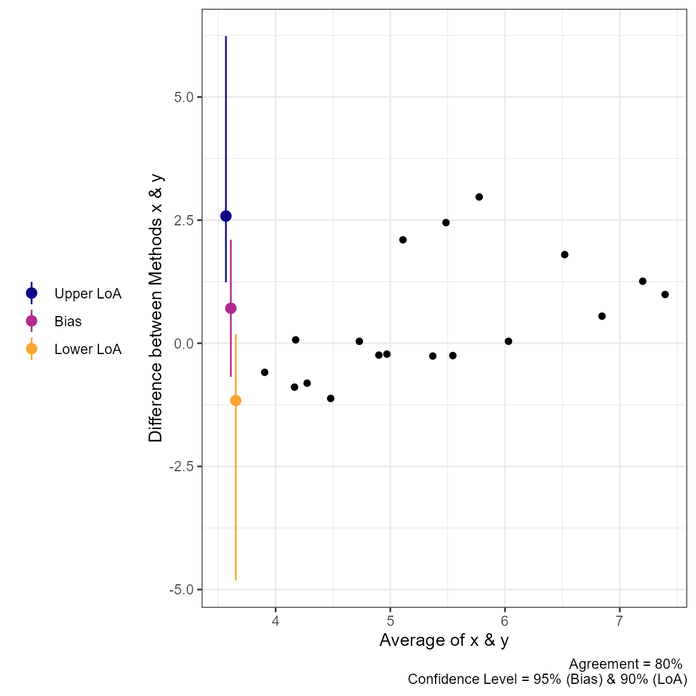
plot(a3, type = 2)
Calculations for agree_reps &
agree_nest
All the calculations for the limits of agreement in these two functions can be found in the article by Zou (2011).
agree_nest LoA
Step 1: Calculate Individual Subject Means and Variances
\[ \bar x_i = \frac{1}{n_{xi}} \Sigma_{j=1}^{n_{xi}} x_{ij} \] \[ \bar y_i = \frac{1}{n_{yi}} \Sigma_{j=1}^{n_{yi}} y_{ij} \] \[ \bar d_i = \bar x_i - \bar y_i \]
\[ \bar d = \Sigma_{i=1}^{n}\frac{d_i}{n} \]
\[ s_{xi}^2 = \Sigma_{j=1}^{n_{xi}} \frac{(x_{xj}- \bar x_i)^2}{n_{xi}-1} \]
\[ s_{yi}^2 = \Sigma_{j=1}^{n_{yi}} \frac{(y_{ij}- \bar y_i)^2}{n_{yi}-1} \]
\[ s_{\bar d}^2 = \Sigma_{j=1}^{n} \frac{(d_{i}- \bar d)^2}{n-1} \]
Step 2: Compute pooled estimates of within subject errors
\[ s^2_{xw} = \Sigma_{i=1}^{n} [\frac{n_{xi} -1}{N_x -1} \cdot s^2_{xi}] \]
\[ s^2_{yw} = \Sigma_{i=1}^{n} [\frac{n_{yi} -1}{N_y -1} \cdot s^2_{yi}] \]
Step 3: Compute Harmonic Means of Replicates
\[ m_{xh} = \frac{n}{\Sigma_{i=1}^n \frac{1}{n_{xi}}} \]
\[ m_{yh} = \frac{n}{\Sigma_{i=1}^n \frac{1}{n_{yi}}} \] Step 4: Compute the variance of the differences
\[ s^2_d = s^2_{\bar d} + (1+\frac{1}{m_{xh}}) \cdot s^2_{xw} + (1+\frac{1}{m_{yh}}) \cdot s^2_{yw} \] Step 5: Compute MOVER Components
\[ S_{11} = s_{\bar d}^2 \cdot (1 - \frac{n-1}{\chi^2_{(1-\alpha, n-1)}}) \]
\[ S_{12} = (1-\frac{1}{m_{xh}}) \cdot (1 - \frac{N_x-n}{\chi^2_{(1-\alpha, N_x-n)}}) \cdot s^2_{xw} \] \[ S_{13} = (1-\frac{1}{m_{yh}}) \cdot (1 - \frac{N_y-n}{\chi^2_{(1-\alpha, N_y-n)}}) \cdot s^2_{yw} \]
\[ S_1 = \sqrt{S_{11}^2 +S_{12}^2 +S_{13}^2} \] \[ l = s_d^2 - S_1 \]
\[ u = s_d^2 + S_1 \]
\[ LME = \sqrt{\frac{z^2_{\alpha} \cdot s_d^2}{n} + z^2_{\beta/2} \cdot(\sqrt{u} - \sqrt{s^2_d})^2} \]
\[ RME = \sqrt{\frac{z^2_{\alpha} \cdot s_d^2}{n} + z^2_{\beta/2} \cdot(\sqrt{l} - \sqrt{s^2_d})^2} \] ### LoA
\[ LoA_{lower} = \bar d - z_{\beta/2} \cdot s_d \]
\[ LoA_{upper} = \bar d + z_{\beta/2} \cdot s_d \]
agree_reps LoA
LoA
Step 1: Compute mean and variance
\[ \bar d_i = \Sigma_{j=1}^{n_i} \frac{d_{ij}}{n_i} \] \[ \bar d = \Sigma^{n}_{i=1} \frac{d_i}{n} \]
\[ s_i^2 = \Sigma_{j=1}^{n_i} \frac{(d_{ij} - \bar d_i)^2}{n_i-1} \] Step 2: Compute pooled estimate of within subject error
\[ s_{dw}^2 = \Sigma_{i=1}^{n} [\frac{n_i-1}{N-n} \cdot s_i^2] \]
Step 3: Compute pooled estimate of between subject error
\[ s^2_b = \Sigma_{i=1}^n \frac{ (\bar d_i - \bar d)^2}{n-1} \]
Step 4: Compute the harmonic mean of the replicate size
\[ m_h = \frac{n}{\Sigma_{i=1}^n m_i^{-1}} \]
Step 5: Compute SD of the difference
\[ s_d^2 = s^2_b + (1+m_h^{-1}) \cdot s_{dw}^2 \] Step 6: Calculate l and u
\[ l = s_d^2 - \sqrt{[s_d^2 \cdot (1 - \frac{n-1}{\chi^2_{(1-\alpha, n-1)}})]^2+[(1-m_h^{-1}) \cdot (1- \frac{N-n}{\chi^2_{(1-\alpha, N-n)}})]^2} \] \[ u = s_d^2 + \sqrt{[s_d^2 \cdot (1 - \frac{n-1}{\chi^2_{(1-\alpha, n-1)}})]^2+[(1-m_h^{-1}) \cdot (1- \frac{N-n}{\chi^2_{(1-\alpha, N-n)}})]^2} \] Step 7: Compute LME and RME
\[ LME = \sqrt{\frac{z_{\alpha} \cdot s_d^2}{n} + z_{\beta/2}^2 \cdot (\sqrt{u}-\sqrt{s^2_d} )^2} \]
\[ RME = \sqrt{\frac{z_{\alpha} \cdot s_d^2}{n} + z_{\beta/2}^2 \cdot (\sqrt{l}-\sqrt{s^2_d} )^2} \]
Checking Assumptions
The assumptions of normality, heteroscedasticity, and proportional
bias can all be checked using the check method.
The function will provide 3 plots: Q-Q normality plot, standardized residuals plot, and residuals plot.
All 3 plots will have a statistical test in the bottom right corner. The Shapiro-Wilk test is included for the normality plot, the Bagan-Preusch test for heterogeneity, and the test for linear slope on the residuals plot.

Proportional Bias
As the check plots for a1 show, proportional bias can
sometimes occur. In these cases Bland and Altman
(1999) recommended adjusting the
bias and LoA for the proportional bias. This is simply done by include a
slope for the average of both measurements (i.e, using an intercept +
slope model rather than intercept only model).
For any of the “agree” functions, this can be accomplished with the
prop_bias argument. When this is set to TRUE, then the
proportional bias adjusted model is utilized. However, you should be
careful with interpreting the hypothesis tests in these cases because
the results are likely bogus for the extreme ends of the measurement. In
any case, plots of the data should always be inspected
a1 = agree_test(x = reps$x,
y = reps$y,
prop_bias = TRUE,
agree.level = .8)
#> prop_bias set to TRUE. Hypothesis test may be bogus. Check plots.
print(a1)
#> Limit of Agreement = 80%
#>
#> ###- Shieh Results -###
#> Exact 90% C.I. [-1.2551, 2.1318]
#> Hypothesis Test: No Hypothesis Test
#> Warning: hypothesis test likely bogus with proportional bias.
#> ###- Bland-Altman Limits of Agreement (LoA) -###
#> Estimate Lower CI Upper CI CI Level
#> Bias 0.4383 -0.08968 0.9663 0.95
#> Lower LoA -0.9159 -1.51049 -0.3213 0.90
#> Upper LoA 1.7926 1.19801 2.3872 0.90
#>
#> LoA at average of both measures. Please check plot.
#> ###- Concordance Correlation Coefficient (CCC) -###
#> CCC: 0.4791, 95% C.I. [0.1276, 0.7237]
plot(a1)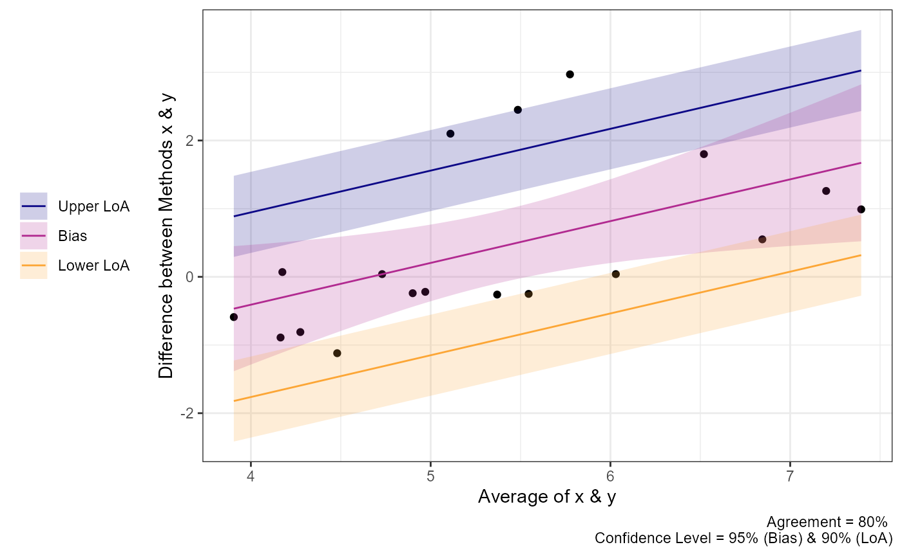
Non-parametric Alternatives
When the assumptions of any of the tests above are violated then a
non-parametric alternative may be useful. The agree_np
function is the non-parametric alternative for the
SimpleAgree R package, and is largely based on the
recommendations of Bland & Altman (Bland and Altman 1999, pg. 157).
The function performs two tests:
- A binomial test on whether or not the observed differences are
within the maximal allowable differences bounds (
deltaargument). - Quantile regression, derived from the
quantregpackage (Koenker 2020), two estimate the median and 95% limits of agreement. If the default agreement levels are used (agree.level = .95) then the 0.025, 0.5 (median), and 0.975 quantiles are estimated.
The function also requires the delta argument
(otherwise the binomial test would be useless). Otherwise, it functions
just like the other agreement functions.
In the code demo below, you will notice that the limits of agreement are no longer symmetric around the bias estimate.
a1 = agree_np(x = "x",
y = "y",
data = reps,
delta = 2,
prop_bias = FALSE,
agree.level = .8)
#> Warning in agree_np(x = "x", y = "y", data = reps, delta = 2, prop_bias =
#> FALSE, : Evidence of proportional bias. Consider setting prop_bias to TRUE.
print(a1)
#> Limit of Agreement = 80%
#> Binomial proportions test and quantile regression for LoA
#>
#> agreement lower.ci upper.ci
#> % within 2 0.8333 0.5914 0.9453
#> Hypothesis Test: don't reject h0
#>
#> ###- Quantile Limits of Agreement (LoA) -###
#> Estimate Lower CI Upper CI CI Level
#> Lower LoA -0.89 -1.3550 -0.4250 0.90
#> Bias 0.04 -0.6238 0.7038 0.95
#> Upper LoA 2.45 1.3841 3.5159 0.90
plot(a1)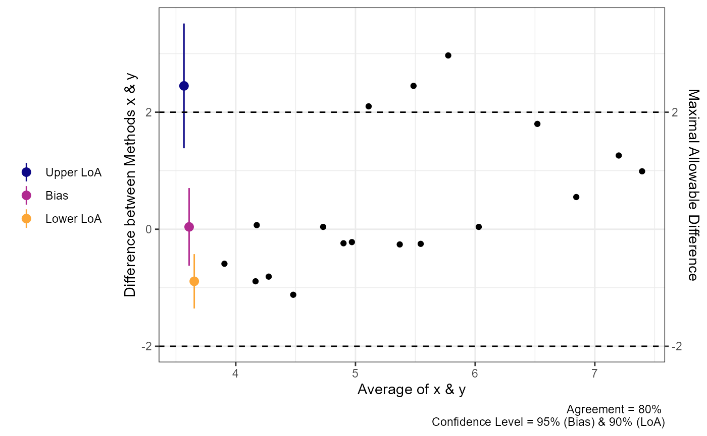
We can also perform the same analysis with proportional bias no longer assumed. You can see that the LoA changes but the test for agreement does not.
a1 = agree_np(x = "x",
y = "y",
data = reps,
delta = 2,
prop_bias = TRUE,
agree.level = .8)
#> Warning in matrix(sample(n, mofn * R, replace = TRUE), mofn, R): non-empty data
#> for zero-extent matrix
#> Warning in matrix(sample(n, mofn * R, replace = TRUE), mofn, R): non-empty data
#> for zero-extent matrix
#> Warning in matrix(sample(n, mofn * R, replace = TRUE), mofn, R): non-empty data
#> for zero-extent matrix
#> Warning in matrix(sample(n, mofn * R, replace = TRUE), mofn, R): non-empty data
#> for zero-extent matrix
#> Warning in matrix(sample(n, mofn * R, replace = TRUE), mofn, R): non-empty data
#> for zero-extent matrix
#> Warning in matrix(sample(n, mofn * R, replace = TRUE), mofn, R): non-empty data
#> for zero-extent matrix
print(a1)
#> Limit of Agreement = 80%
#> Binomial proportions test and quantile regression for LoA
#>
#> agreement lower.ci upper.ci
#> % within 2 0.8333 0.5914 0.9453
#> Hypothesis Test: don't reject h0
#>
#> ###- Quantile Limits of Agreement (LoA) -###
#> Estimate Lower CI Upper CI CI Level
#> Lower LoA @ 3.9 -0.8011 NA NA 0.90
#> Lower LoA @ 5.24 0.4946 NA NA 0.90
#> Lower LoA @ 7.4 2.5863 NA NA 0.90
#> Bias @ 3.9 -0.8011 NA NA 0.95
#> Bias @ 5.24 0.4946 NA NA 0.95
#> Bias @ 7.4 2.5863 NA NA 0.95
#> Upper LoA @ 3.9 -0.8011 NA NA 0.90
#> Upper LoA @ 5.24 0.4946 NA NA 0.90
#> Upper LoA @ 7.4 2.5863 NA NA 0.90
plot(a1)
#> Warning in matrix(sample(n, mofn * R, replace = TRUE), mofn, R): non-empty data
#> for zero-extent matrix
#> Warning in matrix(sample(n, mofn * R, replace = TRUE), mofn, R): non-empty data
#> for zero-extent matrix
#> Warning in matrix(sample(n, mofn * R, replace = TRUE), mofn, R): non-empty data
#> for zero-extent matrix
#> Warning in matrix(sample(n, mofn * R, replace = TRUE), mofn, R): non-empty data
#> for zero-extent matrix
#> Warning in matrix(sample(n, mofn * R, replace = TRUE), mofn, R): non-empty data
#> for zero-extent matrix
#> Warning in matrix(sample(n, mofn * R, replace = TRUE), mofn, R): non-empty data
#> for zero-extent matrix
#> Warning in max(ids, na.rm = TRUE): no non-missing arguments to max; returning
#> -Inf
#> Warning in max(ids, na.rm = TRUE): no non-missing arguments to max; returning
#> -Inf
#> Warning in max(ids, na.rm = TRUE): no non-missing arguments to max; returning
#> -Inf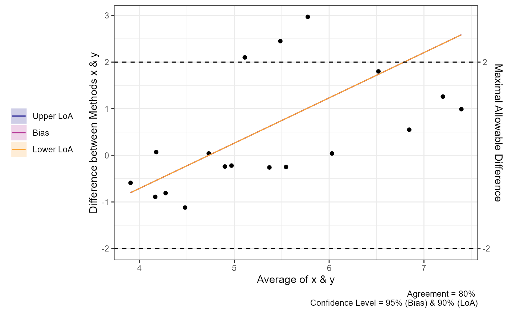
“Big” Data
Sometimes there may be a lot of data and individual points of data on
Bland-Altman plot may be less than ideal. In order to change the plots
from showing the individual data points we can modify the
geom_point argument.
set.seed(81346)
x = rnorm(750, 100, 10)
diff = rnorm(750, 0, 1)
y = x + diff
df = data.frame(x = x,
y = y)
a1 = agree_test(x = df$x,
y = df$y,
agree.level = .95)
plot(a1,
geom = "geom_point")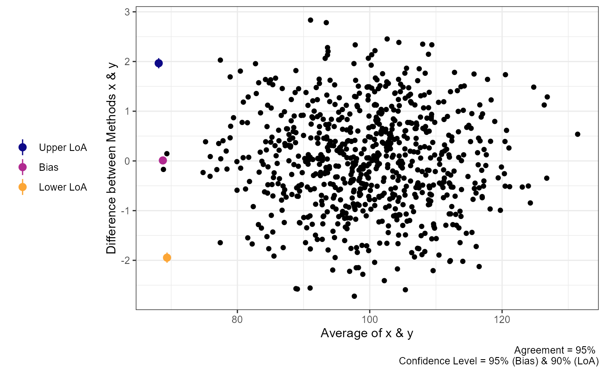
plot(a1,
geom = "geom_bin2d")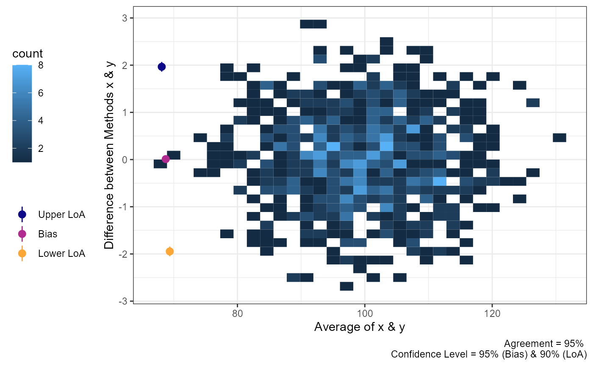
plot(a1,
geom = "geom_density_2d")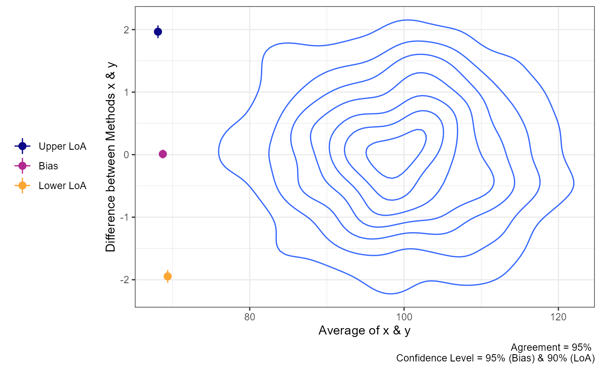
plot(a1,
geom = "geom_density_2d_filled")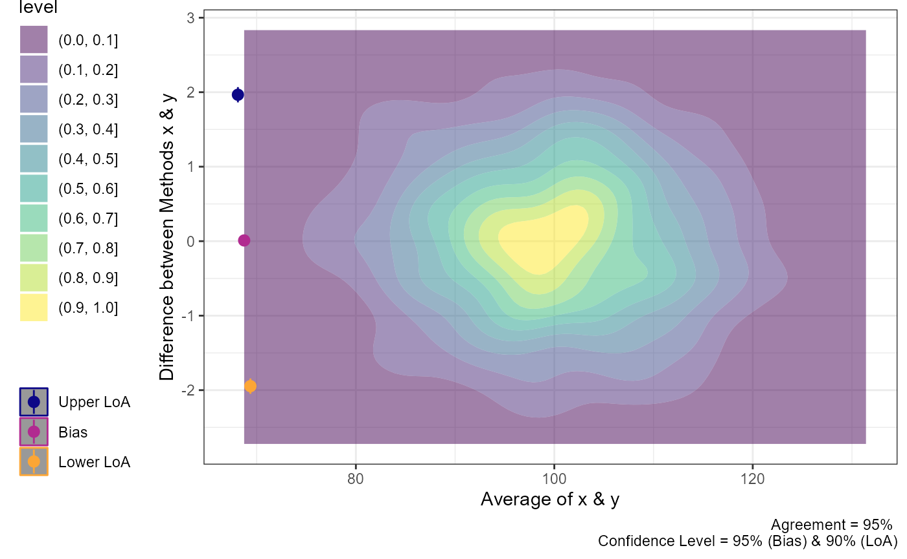
plot(a1,
geom = "stat_density_2d")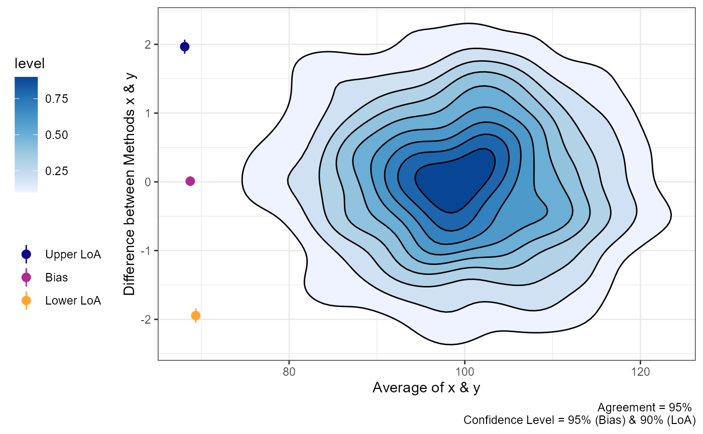
Mixed Models
In some cases, the agreement calculations involve comparing two methods within individuals within varying conditions. For example, the “recpre_long” data set within this package contains two measurements of rectal temperature in 3 different conditions (where there is a fixed effect of condition). For this particular case we can use bootstrapping to estimate the limits of agreement.
The loa_lme function can then calculate the limits of
agreement. Like the previous functions, the data set must be set with
the data argument. The diff is the column
which contains the difference between the two measurements. The
condition is the column that indicates the different
conditions that the measurements were taken within. The id
is the column containing the subject/participant identifier. The final
two arguments replicates and type set the
requirements for the bootstrapping procedure. Warning:
This is a computationally heavy procedure and it may take a few seconds
to a few minutes to complete depending the number of replicates or if
het_var is set to TRUE.
recpre_long$avg = (recpre_long$PM + recpre_long$PM)/2
a4 = loa_lme(data = recpre_long,
diff = "diff",
avg = "avg",
#condition = "trial_condition",
id = "id",
#plot.xaxis = "AM",
replicates = 199,
type = "perc")Power Analysis for Agreement
There are surprisingly few resources for planning a study that
attempts to quantify agreement between two methods. Therefore, we have
added one function, with hopefully more in the future, to aid in the
power analysis for simple agreement studies. The current function is
blandPowerCurve which constructs a “curve” of power across
sample sizes, agreement levels, and confidence levels. This is based on
the work of Lu et al. (2016).
For this function the user must define the hypothesized limits of
agreement (delta), mean difference between methods
(mu), and the standard deviation of the difference scores
(SD). There is also the option of adjusting the range of
sample size (default: seq(10,100,1) which is 10 to 100 by
1), the agreement level (default is 95%), and confidence level (default
is 95%). The function then produces a data frame of the results. A quick
look at the head and we can see that we have low statistical power when
the sample size is at the lower end of the range.
power_res <- blandPowerCurve(
samplesizes = seq(10, 100, 1),
mu = 0.5,
SD = 2.5,
delta = c(6,7),
conf.level = c(.90,.95),
agree.level = c(.8,.9)
)
head(power_res)
#> N mu SD delta power agree.level conf.level
#> 1 10 0.5 2.5 6 0.4870252 0.8 0.9
#> 2 11 0.5 2.5 6 0.5624800 0.8 0.9
#> 3 12 0.5 2.5 6 0.6262736 0.8 0.9
#> 4 13 0.5 2.5 6 0.6802613 0.8 0.9
#> 5 14 0.5 2.5 6 0.7260286 0.8 0.9
#> 6 15 0.5 2.5 6 0.7649104 0.8 0.9We can then find the sample size at which (or closest to which) a
desired power level with the find_n method for
powerCurve objects created with the function above.
find_n(power_res, power = .8)
#> # A tibble: 8 × 5
#> delta conf.level agree.level power N
#> <dbl> <dbl> <dbl> <dbl> <dbl>
#> 1 6 0.9 0.8 0.798 16
#> 2 6 0.9 0.9 0.802 50
#> 3 6 0.95 0.8 0.798 20
#> 4 6 0.95 0.9 0.802 63
#> 5 7 0.9 0.8 0.847 10
#> 6 7 0.9 0.9 0.800 19
#> 7 7 0.95 0.8 0.775 11
#> 8 7 0.95 0.9 0.806 24Additionally we can plot the power curve to see how power changes
over different levels of delta, agree.level,
and conf.level
plot(power_res)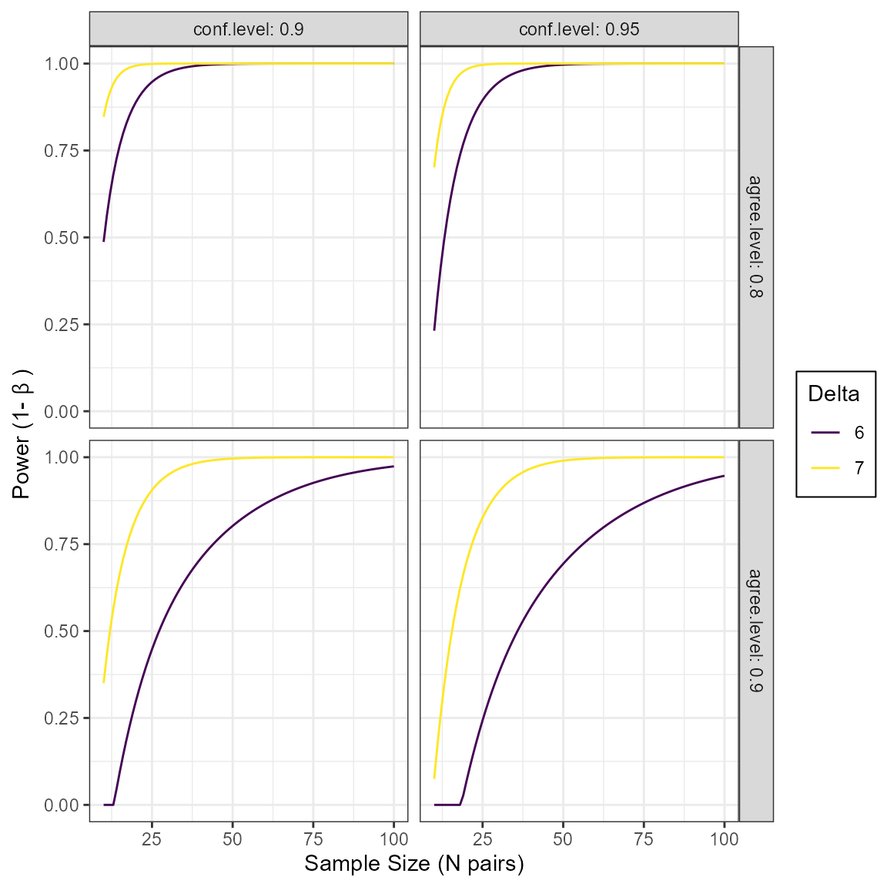